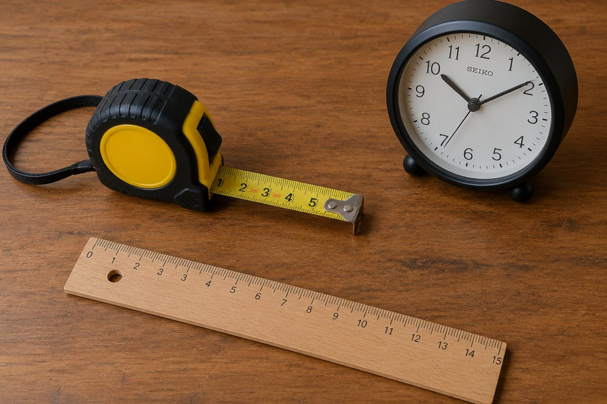

전체 단원 › 3학년 1학기 › 수학 › 길이와 시간
mm, km, 초는 언제 쓸까?

개미의 몸길이와 학교까지의 거리를 같은 단위로 재면 불편하겠죠? 길이와 시간에는 상황에 맞는 여러 단위가 있어요.
1cm보다 작은 단위 mm
자의 1cm 사이에는 작은 눈금 10칸이 있어요. 작은 눈금 한 칸의 길이를 1mm(1밀리미터)라고 해요.
그래서 1cm = 10mm예요. 3cm보다 5mm 더 긴 길이는 3cm 5mm라고 쓰고, 35mm와 같아요.
3cm 5mm = 30mm + 5mm = 35mm
1000m보다 긴 단위 km
먼 거리를 나타낼 때는 km(킬로미터)를 써요. 1000m = 1km예요.
2km보다 300m 더 먼 거리는 2km 300m이고, 2300m와 같아요.
2km 300m = 2000m + 300m = 2300m
1분보다 짧은 단위 초
초바늘이 작은 눈금 한 칸을 가는 시간이 1초예요. 초바늘이 시계를 한 바퀴 돌면 60초이고, 이것이 1분이에요.
그래서 1분 = 60초, 1시간 = 60분이에요. 2분 10초는 120초 + 10초 = 130초예요.
1분 = 60초, 2분 10초 = 130초
이렇게 풀어요: 시간의 덧셈과 뺄셈
1시간 40분 + 35분: ① 분끼리 더하면 40 + 35 = 75분. ② 60분은 1시간이므로 75분 = 1시간 15분. ③ 1시간 + 1시간 15분 = 2시간 15분이에요.
4시 20분 − 1시 45분: 20분에서 45분을 뺄 수 없으니 1시간을 60분으로 바꿔 3시 80분으로 생각해요. 80 − 45 = 35분, 3 − 1 = 2시간이라서 2시간 35분이에요.
1시간 40분 + 35분 = 2시간 15분, 4시 20분 − 1시 45분 = 2시간 35분
핵심 낱말
- mm(밀리미터)
- 1cm를 10칸으로 똑같이 나눈 한 칸의 길이
- km(킬로미터)
- 1000m를 나타내는 길이 단위
- 초
- 1분을 60으로 나눈 짧은 시간
- 시간
- 어떤 시각부터 어떤 시각까지의 동안
한 줄 정리
- 1cm = 10mm, 1km = 1000m예요.
- 1분 = 60초, 1시간 = 60분이에요.
- 시간 계산에서는 60분이 되면 1시간으로 올리고, 모자라면 1시간을 60분으로 바꿔요.
학교 교육과정 연결
- [4수03-16] 1cm와 1mm, 1km와 1m의 관계를 이해하고, 길이를 ‘몇 cm 몇 mm’와 ‘몇 mm’, ‘몇 km 몇 m’와 ‘몇 m’로 다양하게 표현할 수 있다.
- [4수03-13] 1분과 1초의 관계를 이해하고, 초 단위까지 시각을 읽을 수 있다.
- [4수03-14] 실생활 문제 상황과 연결하여 초 단위까지의 시간의 덧셈과 뺄셈을 할 수 있다.